AHL 3.14 — Graph theory（グラフ理論）
- graph（グラフ）の vertex（頂点）と edge（辺）が何かを言える。
- adjacent vertices（隣り合う頂点）、adjacent edges（隣り合う辺）、degree（次数）が読める。
- degree の合計が edge の数の \(2\) 倍になることを使える。
- simple graph（単純グラフ）、complete graph（完全グラフ）、weighted graph（重み付きグラフ）を見分けられる。
- directed graph（有向グラフ）の in degree と out degree を数えられる。
- connected（連結）と strongly connected（強連結）のちがいを説明できる。
- subgraph（部分グラフ）と tree（木）が何かを言える。
- 道路網や部屋の配置など、現実のものをグラフで表せる。
graph theory は、日本の高校数学の課程にありません。ですから、まったく初めてで当たり前です。このページは、何も知らないところから読めるように書いてあります。
新しいのは言葉だけで、計算そのものは足し算と数えることしかありません。用語を覚えるのが、この項目の中身です。
AI HL の formula booklet で Topic 3 に欄があるのは、AHL 3.9 の変換行列と、ベクトルの AHL 3.10、3.11、3.13 だけです。graph theory の欄は \(1\) つもありません。
ですから、この項目で出てくる数少ない関係（degree の合計、complete graph の edge の数、tree の edge の数）は、自分で覚えることになります。 どれも短いので、意味と一緒に覚えてしまってください。出てくるたびに、その場で説明します。
The idea
この項目は、「何と何がつながっているか」だけを取り出して図にする項目です。
1. graph は、点と線だけの図です
graph（グラフ）は、vertex（頂点）と、それを結ぶ edge（辺）でできています。
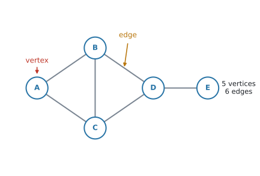
図 1 には、vertex が \(5\) つ、edge が \(6\) 本あります。vertex は vertices と複数形になります。
日本語でも英語でも、同じ graph という言葉を使います。関数のグラフとは、まったく別のものです。
この項目の graph には、軸も座標もありません。あるのは「点」と「つながり」だけです。
いちばん大事なのは、点をどこに置いたかには意味がないということです。
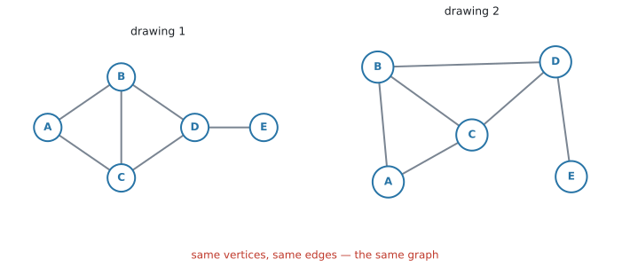
図 2 の \(2\) つは、見た目がまるで違いますが、同じ graph です。vertex の名前も、どれとどれが結ばれているかも、まったく同じだからです。
線の長さも、曲がっているかどうかも、関係ありません。 意味があるのは「つながっているか、いないか」だけです。
2. adjacent と degree
用語を \(3\) つ入れます。
- \(2\) つの vertex が edge で結ばれているとき、その \(2\) つは adjacent（隣り合っている）といいます
- \(2\) 本の edge が同じ vertex を共有しているとき、その \(2\) 本は adjacent edges です
- \(1\) つの vertex から出ている edge の本数を、その vertex の degree（次数）といいます
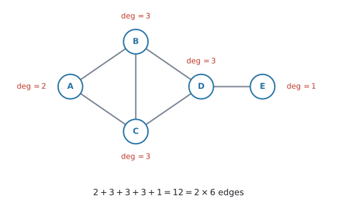
図 3 で、\(B\) から出ている edge は \(BA\)、\(BC\)、\(BD\) の \(3\) 本なので \(\deg(B) = 3\) です。\(E\) からは \(1\) 本しか出ていないので \(\deg(E) = 1\) です。
degree の合計は、edge の数の \(2\) 倍です
図 3 の degree を全部足すと \(2+3+3+3+1 = 12\) で、edge の数 \(6\) のちょうど \(2\) 倍です。これはいつでも成り立ちます。
\[ \sum \deg(v) = 2 \times (\text{number of edges}) \tag{1}\]
公式集にはありません。覚えてください。 理由はWhy it worksで説明します。そこが分かっていれば、忘れても作り直せます。
degree を全部書き出したあと、合計が edge の数の \(2\) 倍になっているかを見てください。合わなければ、どこかで数え落としています。
degree の合計は、必ず偶数です。 奇数になったら、その時点で間違いです。
3. graph の種類
問題文でよく出る \(3\) つの言い方があります。
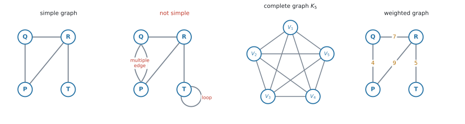
- simple graph（単純グラフ）… loop（同じ vertex にもどる edge）も、multiple edge（同じ \(2\) 点を結ぶ \(2\) 本以上の edge）もない graph
- complete graph（完全グラフ）… どの \(2\) つの vertex も edge で結ばれている graph。vertex が \(n\) 個のものを \(K_n\) と書きます
- weighted graph（重み付きグラフ）… edge に数（距離・費用・時間など）が書き込まれている graph
complete graph の edge の数
\(K_n\) では、\(n\) 個から \(2\) 個を選ぶ組み合わせの数だけ edge があります。
\[ \text{number of edges of } K_n = \frac{n(n-1)}{2} \tag{2}\]
検算。 図 4 の \(K_5\) なら \(\dfrac{5 \times 4}{2} = 10\) 本 ✓
\(K_n\) の各 vertex は、自分以外の全部と結ばれているので \(\deg = n - 1\) です。式 1 で確かめると \(n(n-1) = 2 \times \dfrac{n(n-1)}{2}\) ✓
これも公式集にはありません。ただ、\(\dfrac{n(n-1)}{2}\) は「\(n\) 個から \(2\) 個を選ぶ組み合わせ」の式なので、電卓の nCr(n, 2) でも出せます。
4. directed graph では、向きを数えます
edge に矢印が付いたものを directed graph（有向グラフ）といいます。一方通行の道路や、\(1\) 方向だけのリンクを表すのに使います。
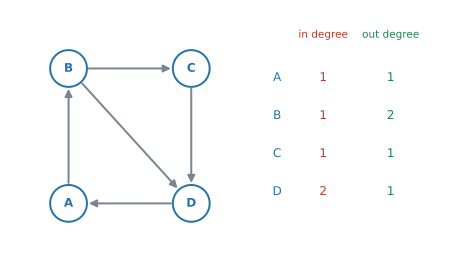
矢印が入ってくる本数を in degree、出ていく本数を out degree といいます。
図 5 の \(D\) には \(C\) と \(B\) から \(2\) 本入り、\(A\) へ \(1\) 本出ているので、in degree \(= 2\)、out degree \(= 1\) です。
in degree の合計も、out degree の合計も、矢印の本数と同じになります。どちらも \(5\) です。\(1\) 本の矢印は、どこかから \(1\) 回出て、どこかへ \(1\) 回入るからです。
directed graph では、\(A\) から \(B\) へ行けても、\(B\) から \(A\) へ行けるとはかぎりません。
問題文に directed があるか、図に矢印が付いているか。そこを見てから数え始めてください。
5. connected と strongly connected
connected（連結）は、どの \(2\) つの vertex のあいだにも道があるという意味です。
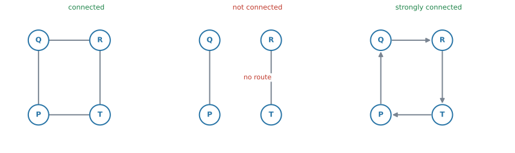
図 6 の真ん中は、左半分と右半分のあいだに edge がないので、connected ではありません。
directed graph では、もう \(1\) 段きびしい言い方があります。strongly connected（強連結）は、どの \(2\) つの vertex についても、矢印の向きに従って行き来できるという意味です。
\(A\) から \(B\) へ行けるだけでは足りません。\(B\) から \(A\) へも行けなければなりません。
strongly connected は、「どの交差点からどの交差点へも、一方通行の標識を守ったまま行ける」という意味です。
矢印を全部無視すれば connected なのに、向きを守ると行けない場所ができる——これが strongly connected でない graph です。この区別は、AHL 3.15 の transition matrix で必要になります。
6. subgraph と tree
subgraph（部分グラフ）は、もとの graph から vertex と edge をいくつか選んだものです。新しい edge を足すことはできません。
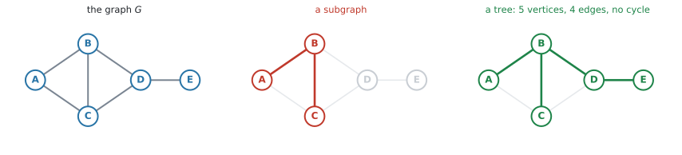
tree（木）は、connected で、cycle（一周してもどる道）がない graph です。
図 7 の右は tree です。\(5\) つの vertex が全部つながっていて、どこをたどっても同じ場所にもどってきません。
tree の edge の数
vertex が \(n\) 個の tree は、edge が必ず \(n - 1\) 本です。
\[ \text{number of edges of a tree} = n - 1 \tag{3}\]
\(1\) 本でも足すと cycle ができ、\(1\) 本でも減らすと切りはなされてしまいます。これも公式集にはないので、覚えてください。
AHL 3.16 の minimum spanning tree（最小全域木）は、「全部の vertex を、いちばん軽い重みでつなぐ tree」を探す問題です。
この項目では、言葉の意味だけ押さえておけば十分です。
7. 現実のものを graph にします
シラバスは、Students should be able to represent real-world structures (circuits, maps, etc) as graphs と書いています。現実の場面を graph に直すところが、この項目の出口です。
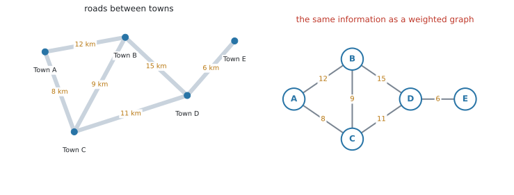
図 8 の左は地図、右は同じ情報の graph です。町が vertex、道路が edge、距離が weight になっています。
地図では町の位置に意味がありましたが、graph では意味がありません。 残っているのは「どの町とどの町が道でつながっているか」と「その距離」だけです。
| 現実のもの | vertex | edge |
|---|---|---|
| 道路網 | 町・交差点 | 道路 |
| 部屋の配置 | 部屋 | ドア・通路 |
| 電気回路 | 接続点 | 配線 |
| 航空路線 | 空港 | 路線 |
| ウェブサイト | ページ | リンク（directed） |
文章題では、まずここで迷います。つながれる側が vertex、つなぐものが edge です。
道路の問題なら、道路そのものを vertex にしてはいけません。町が vertex です。
Why it works
ここで説明するのは、なぜ degree の合計が edge の数の \(2\) 倍になるのか、その \(1\) 点だけです。
edge を \(1\) 本えらんでください。その edge には両端があり、片方の vertex の degree に \(1\)、もう片方の degree に \(1\) を足しています。
つまり、\(1\) 本の edge は、degree の合計に必ず \(2\) を足すということです。
edge が \(6\) 本あれば、degree の合計は \(6 \times 2 = 12\)。これが 式 1 です。
この関係は、英語では handshake lemma（握手の補題）と呼ばれます。「\(1\) 回の握手には手が \(2\) つ要る」からです。試験でこの名前が問われることはありません。
Worked examples
問題文は英語です。意味が理解できなかったら、問題文の下の「日本語訳」を開いてください。解説は日本語です。
例題 1 The graph \(G\) is shown below.
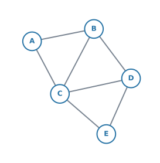
(a) Write down the number of edges of \(G\).
(b) Write down the degree of each vertex, and verify that the sum of the degrees is twice the number of edges.
(c) Explain why \(G\) is a simple graph.
日本語訳
グラフ \(G\) が下に示されています。
(a) \(G\) の辺の数を書きなさい。
(b) 各頂点の次数を書き、次数の合計が辺の数の \(2\) 倍になっていることを確かめなさい。
(c) \(G\) が simple graph である理由を説明しなさい。
(a) 数えます。\(AB\)、\(AC\)、\(BC\)、\(BD\)、\(CD\)、\(CE\)、\(DE\) の \(7\) 本です。
数え落としが出やすいところなので、\(A\) から出るもの、\(B\) から出るもの、と順番に拾ってください。
(b) それぞれの vertex から出ている edge の本数です。
| vertex | \(A\) | \(B\) | \(C\) | \(D\) | \(E\) |
|---|---|---|---|---|---|
| \(\deg\) | \(2\) | \(3\) | \(4\) | \(3\) | \(2\) |
\[ 2 + 3 + 4 + 3 + 2 = 14 = 2 \times 7 \]
式 1 のとおりになっています。
(c) simple graph の条件は \(2\) つでした（第3節）。loop がないこと、multiple edge がないことです。
試験ではこう書く
\(G\) is simple because no edge joins a vertex to itself (no loops), and no two vertices are joined by more than one edge (no multiple edges).
（自分自身にもどる edge がなく、同じ \(2\) 点を結ぶ edge が \(2\) 本以上ないから、という意味です。）
(a) \(7\)
(b) \[ \deg(A)=2,\quad \deg(B)=3,\quad \deg(C)=4 \] \[ \deg(D)=3,\quad \deg(E)=2 \] \[ 2+3+4+3+2 = 14 = 2 \times 7 \quad ✓ \]
(c) There are no loops and no multiple edges, so \(G\) is simple.
例題 2 The directed graph \(D\) is shown below.
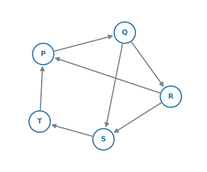
(a) Write down the in degree and the out degree of each vertex.
(b) Determine whether \(D\) is strongly connected, justifying your answer.
日本語訳
有向グラフ \(D\) が下に示されています。
(a) 各頂点の in degree と out degree を書きなさい。
(b) \(D\) が strongly connected かどうかを判断し、その理由を書きなさい。
(a) 矢印を \(1\) 本ずつ見て、入るほうと出るほうに分けて数えます。
| vertex | \(P\) | \(Q\) | \(R\) | \(S\) | \(T\) |
|---|---|---|---|---|---|
| in degree | \(2\) | \(1\) | \(1\) | \(2\) | \(1\) |
| out degree | \(1\) | \(2\) | \(2\) | \(1\) | \(1\) |
検算。 矢印は \(7\) 本で、in の合計も out の合計も \(7\) です ✓（第4節）
(b) 「どの vertex からどの vertex へも、矢印の向きどおりに行けるか」を見ます。
\(1\) 組ずつ調べると \(20\) 通りになって大変です。全部の vertex を通る一方通行の輪が \(1\) つ見つかれば、それで足ります。
\[ P \to Q \to R \to S \to T \to P \]
この輪をぐるぐる回れば、どの vertex からでも、どの vertex にも行けます。
justifying your answer と書かれているので、この輪を示すところまでが解答です。「はい」だけでは点になりません。
試験ではこう書く
Yes. The directed cycle \(P \to Q \to R \to S \to T \to P\) passes through every vertex, so from any vertex we can reach any other by following this cycle. Hence \(D\) is strongly connected.
（すべての vertex を通る有向の輪があるので、どの vertex からもどの vertex へも行ける、という意味です。）
(a)
| vertex | \(P\) | \(Q\) | \(R\) | \(S\) | \(T\) |
|---|---|---|---|---|---|
| in | \(2\) | \(1\) | \(1\) | \(2\) | \(1\) |
| out | \(1\) | \(2\) | \(2\) | \(1\) | \(1\) |
(b) Yes. \(P \to Q \to R \to S \to T \to P\) is a directed cycle through all five vertices, so every vertex can be reached from every other vertex. \(D\) is strongly connected.
例題 3 A complete graph has \(45\) edges.
(a) Find the number of vertices.
(b) Write down the degree of each vertex.
日本語訳
ある complete graph の辺の数は \(45\) です。
(a) 頂点の数を求めなさい。
(b) 各頂点の次数を書きなさい。
(a) complete graph の edge の数は \(\dfrac{n(n-1)}{2}\) でした。これを \(45\) とおきます。
\[ \frac{n(n-1)}{2} = 45 \]
\[ n(n-1) = 90 \quad \Rightarrow \quad n^{2} - n - 90 = 0 \]
電卓の Polynomial Root Finder（SL 1.8）に入れると \(n = 10\) と \(n = -9\) が出ます。
vertex の数は負になりません。 \(n = -9\) は捨てて、理由を一言書いてください。
\[ n = 10 \]
検算。 \(\dfrac{10 \times 9}{2} = 45\) ✓
(b) complete graph では、\(1\) つの vertex が自分以外の全部と結ばれています。
\[ \deg = 10 - 1 = 9 \]
検算。 \(10 \times 9 = 90 = 2 \times 45\) ✓（式 1）
(a) \[ \frac{n(n-1)}{2} = 45 \quad \Rightarrow \quad n^{2} - n - 90 = 0 \] \[ n = 10 \ \text{or} \ n = -9 \]
\(n\) must be positive, so there are \(10\) vertices.
(b) \(\deg = 9\)
例題 4 The weighted graph below shows the roads between five delivery points. The weights are distances in kilometres.
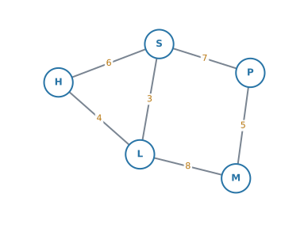
(a) Write down the degree of vertex \(L\).
(b) Explain why this graph is not complete.
(c) Find the total distance of the route \(H \to S \to P \to M\).
(d) Write down the vertices that are adjacent to \(S\).
日本語訳
下の重み付きグラフは、\(5\) つの配達先のあいだの道路を表しています。重みはキロメートル単位の距離です。
(a) 頂点 \(L\) の次数を書きなさい。
(b) このグラフが complete でない理由を説明しなさい。
(c) 経路 \(H \to S \to P \to M\) の距離の合計を求めなさい。
(d) \(S\) に adjacent な頂点を書きなさい。
(a) \(L\) から出ている edge は \(LH\)、\(LS\)、\(LM\) の \(3\) 本です。\(\deg(L) = 3\)
(b) complete graph は、どの \(2\) 点も結ばれている graph でした。
vertex が \(5\) つなので、complete なら edge は \(\dfrac{5 \times 4}{2} = 10\) 本必要です。この図には \(6\) 本しかありません。
具体例を \(1\) つ挙げるほうが、答案としては強くなります。\(H\) と \(P\) を結ぶ edge がありません。
試験ではこう書く
The graph is not complete because not every pair of vertices is joined by an edge: for example, there is no edge between \(H\) and \(P\). A complete graph on \(5\) vertices would have \(10\) edges, but this graph has only \(6\).
（すべての組が結ばれてはいないから、という意味です。\(H\) と \(P\) の例と、\(10\) 本と \(6\) 本の対比を添えています。）
(c) 通る edge の weight を足すだけです。
\[ 6 + 7 + 5 = 18 \ \text{km} \]
(d) \(S\) から edge が出ている先を全部書きます。
\[ H,\ L,\ P \]
(a) \(\deg(L) = 3\)
(b) Not every pair of vertices is joined: for example, \(H\) and \(P\) are not adjacent. A complete graph on \(5\) vertices has \(10\) edges, but this one has \(6\).
(c) \[ 6 + 7 + 5 = 18 \ \text{km} \]
(d) \(H\), \(L\), \(P\)
Common errors
線が交差しているかどうか、線が長いか短いかで、違う graph だと考えてしまう誤りです。
同じ vertex どうしが結ばれていれば、同じ graph です（図 2）。見るのは「つながりの表」であって、絵ではありません。
\(\deg(v)\) は「その vertex から出ている edge の本数」です。graph 全体の edge の数ではありません。
数えたあとで、合計が edge の \(2\) 倍になっているかを確かめてください。
式 1 より、degree の合計は必ず偶数です。
奇数が出たら、計算する前に数え間違いです。もう一度、\(1\) つの vertex ずつ数え直してください。
\(2\) で割るのを忘れる誤りです。
\(A\) と \(B\) を結ぶ edge は \(1\) 本で、「\(A\) から \(B\)」と「\(B\) から \(A\)」を別に数えてはいけません。\(2\) 回数えた分を、\(2\) で割って戻します。
矢印付きの図で \(\deg = 3\) とだけ書いてしまう誤りです。
directed graph では、聞かれているのは in degree と out degree です。\(2\) つに分けて書いてください。
strongly connected は directed graph だけの言葉です。矢印のない graph に使ってはいけません。
逆に、矢印のある graph に connected とだけ答えると、向きを見ていないと判断されます。問題文にどちらが書かれているかを見てください。
justify や explain が付いた設問では、行き来できることを示す道を書く必要があります。
例 2 のように、全部の vertex を通る有向の輪を \(1\) つ書くのが、いちばん短い答え方です。
subgraph は「選ぶ」だけです。新しく結ぶことはできません。
選んだ vertex どうしでも、もとの graph で結ばれていなければ、subgraph でも結べません。
tree と言われたのに、一周できる道が残っている図をかいてしまう誤りです。
vertex が \(n\) 個なら edge は \(n-1\) 本（式 3）。本数を数えるだけで、その場で確かめられます。
Using your GDC (TI-Nspire CX II)
この項目は、電卓よりも紙と鉛筆の項目です。 図を読んで数える作業が中心なので、電卓の出番は多くありません。
とはいえ、\(3\) つだけ使い道があります。
1. complete graph の edge の数
\(\dfrac{n(n-1)}{2}\) は、組み合わせの nCr で出せます。
nCr(12, 2)\(66\) と返ります。\(K_{12}\) の edge の数です。手で \(\dfrac{12 \times 11}{2}\) と計算しても同じですが、桁が大きいときはこちらが速いです。
2. 逆に、edge の数から vertex の数を出す
例 3 のように \(\dfrac{n(n-1)}{2} = 45\) を解くときは、\(2\) 次方程式なので Polynomial Root Finder が使えます。
menu → Algebra → Polynomial Tools → Find Roots of Polynomial次数 \(2\)、係数 \(1\)、\(-1\)、\(-90\) と入れると、\(10\) と \(-9\) が返ります。
vertex の数は負になりません。捨てた理由を答案に一言書くところまでが解答です（SL 1.8）。
3. degree の合計を足す
vertex が多いときは、degree をリストに入れて sum() で足すと、数え落としが見つけやすくなります。
sum({2, 3, 4, 3, 2})\(14\) と返れば、edge が \(7\) 本のはずです。合っていなければ、数え直しの合図です。
「つながりを行列で書く」やり方は AHL 3.15 で扱います。そこからは、電卓の出番が一気に増えます。
この項目では、言葉と数え方に集中してください。
Exercises
各問題に、折りたたみが3つ付いています。日本語訳、解答例（答案用紙に書くべきこと。英語です）、解説（なぜそうなるか。日本語です）。
まず自分で解いて、次に解答例と見くらべてください。解説は、合わなかったときだけ開けば十分です。
1 The graph below has vertices \(A\), \(B\), \(C\), \(D\), \(E\) and \(F\).
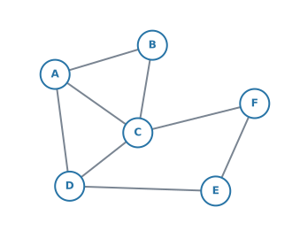
(a) Write down the number of edges.
(b) Write down the degree of each vertex.
(c) Verify your answers using the sum of the degrees.
日本語訳
下のグラフは、頂点 \(A\)、\(B\)、\(C\)、\(D\)、\(E\)、\(F\) をもちます。
(a) 辺の数を書きなさい。
(b) 各頂点の次数を書きなさい。
(c) 次数の合計を使って、答えを確かめなさい。
(a) \(8\)
(b) \[ \deg(A)=3,\quad \deg(B)=2,\quad \deg(C)=4 \] \[ \deg(D)=3,\quad \deg(E)=2,\quad \deg(F)=2 \]
(c) \[ 3+2+4+3+2+2 = 16 = 2 \times 8 \quad ✓ \]
(a) \(AB\)、\(AC\)、\(AD\)、\(BC\)、\(CD\)、\(DE\)、\(EF\)、\(CF\) の \(8\) 本です。\(1\) つの vertex から出るものを順に拾うと、数え落としが減ります。
(c) 合計 \(16\) が \(8\) の \(2\) 倍になっているので、(a) と (b) はどちらも合っています（式 1）。合わなかったら、両方を疑ってください。
2 A graph has \(9\) edges. Every vertex has degree \(3\). Find the number of vertices.
日本語訳
あるグラフの辺の数は \(9\) です。すべての頂点の次数は \(3\) です。頂点の数を求めなさい。
\[ \sum \deg(v) = 2 \times 9 = 18 \] \[ 3n = 18 \quad \Rightarrow \quad n = 6 \]
図がなくても解けます。式 1 から、degree の合計は \(18\) と決まります。
そのうえで「\(3\) が \(n\) 個で \(18\)」と考えれば、\(n = 6\) です。
graph をかく必要はありません。 この形の問題は、\(2\) 行で終わります。
3 Consider the complete graph \(K_{7}\).
(a) Write down the degree of each vertex.
(b) Find the number of edges.
日本語訳
complete graph \(K_{7}\) を考えます。
(a) 各頂点の次数を書きなさい。
(b) 辺の数を求めなさい。
(a) \(\deg = 7 - 1 = 6\)
(b) \[ \frac{7 \times 6}{2} = 21 \]
4 Explain why there is no graph with exactly five vertices, each of degree \(3\).
日本語訳
次数がすべて \(3\) である頂点をちょうど \(5\) つもつグラフが存在しない理由を説明しなさい。
\[ \sum \deg(v) = 5 \times 3 = 15 \]
The sum of the degrees must equal twice the number of edges, so it must be even. \(15\) is odd, so no such graph exists.
degree の合計は、edge の数の \(2\) 倍でした。ですから、必ず偶数になります。
\(5 \times 3 = 15\) は奇数なので、そんな graph は作れません。
図をかいて試す必要はありません。 合計が奇数だと分かった時点で、答えが出ています。この形の問題は、式 1 だけで片付きます。
5 The directed graph below has vertices \(A\), \(B\), \(C\) and \(D\).
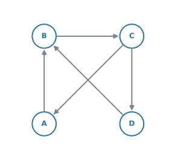
(a) Write down the in degree and the out degree of each vertex.
(b) Verify that both totals equal the number of directed edges.
日本語訳
下の有向グラフは、頂点 \(A\)、\(B\)、\(C\)、\(D\) をもちます。
(a) 各頂点の in degree と out degree を書きなさい。
(b) どちらの合計も有向辺の数に等しいことを確かめなさい。
(a)
| vertex | \(A\) | \(B\) | \(C\) | \(D\) |
|---|---|---|---|---|
| in | \(1\) | \(2\) | \(1\) | \(1\) |
| out | \(1\) | \(1\) | \(2\) | \(1\) |
(b) \[ 1+2+1+1 = 5, \qquad 1+1+2+1 = 5 \]
There are \(5\) directed edges, so both totals are correct.
矢印は \(A \to B\)、\(B \to C\)、\(C \to A\)、\(C \to D\)、\(D \to B\) の \(5\) 本です。
入る矢印と出る矢印を、別々に数えてください。 混ぜてしまうのが一番多い誤りです。
(b) \(1\) 本の矢印は「どこかから出て、どこかへ入る」ので、in の合計も out の合計も矢印の本数と同じになります（第4節）。
6 Two directed graphs are shown below.
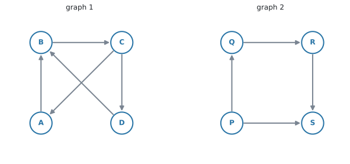
For each graph, determine whether it is strongly connected. Justify your answers.
日本語訳
\(2\) つの有向グラフが下に示されています。
それぞれについて、strongly connected かどうかを判断しなさい。理由も書きなさい。
Graph 1 is strongly connected. The directed cycle \(A \to B \to C \to A\) joins those three vertices, \(D\) is reached by \(C \to D\), and \(D \to B\) returns to the cycle. So every vertex can be reached from every other vertex; for example \(D \to B \to C \to A\).
Graph 2 is not strongly connected: no directed edge leaves \(S\), so it is impossible to travel from \(S\) to any other vertex.
graph 1 は、\(C \to A\) という「もどる矢印」があるのが効いています。\(D\) から \(A\) へも \(D \to B \to C \to A\) で行けます。
graph 2 は、\(S\) から出る矢印が \(1\) 本もありません。入ってくるだけで、出られません。 ですから strongly connected ではありません。
justify が付いているので、行けない具体例を \(1\) つ挙げるところまで書いてください。「いいえ」だけでは点になりません。
なお graph 2 も、矢印を無視すれば connected です。connected と strongly connected を混同しないでください（第5節）。
7 A tree has \(12\) vertices. Write down the number of edges.
日本語訳
ある tree の頂点の数は \(12\) です。辺の数を書きなさい。
\[ 12 - 1 = 11 \]
tree の edge の数は、いつも「vertex の数 \(- 1\)」です（式 3）。
検算。 degree の合計は \(2 \times 11 = 22\) になるはずです。
8 Using the graph in question 1, write down the edges of the subgraph formed by the vertices \(A\), \(B\), \(C\) and \(D\) only.
日本語訳
問題 1 のグラフについて、頂点 \(A\)、\(B\)、\(C\)、\(D\) だけでできる部分グラフの辺を書きなさい。
\[ AB,\quad AC,\quad AD,\quad BC,\quad CD \]
\(A\)、\(B\)、\(C\)、\(D\) の両端がそろっている edge だけを残します。
\(DE\)、\(EF\)、\(CF\) は、\(E\) や \(F\) が選ばれていないので入りません。
新しい edge を足してはいけません。 たとえば \(B\) と \(D\) を結びたくなりますが、もとの graph に \(BD\) がないので、subgraph にも入りません（第6節）。
9 The graph below shows five areas of a house. Two areas are joined by an edge if there is a door between them.
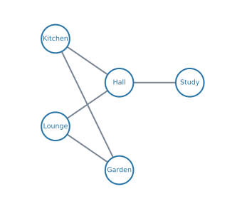
(a) Write down the degree of the vertex Hall, and interpret this number in context.
(b) Explain why the graph is connected, and say what this means for the house.
日本語訳
下のグラフは、ある家の \(5\) つの場所を表しています。あいだにドアがあるとき、\(2\) つの場所は辺で結ばれています。
(a) 頂点 Hall の次数を書き、その数が文脈で何を意味するかを説明しなさい。
(b) このグラフが connected である理由を説明し、それが家について何を意味するかを書きなさい。
(a) \(\deg(\text{Hall}) = 3\)
The hall has three doors leading directly to other areas.
(b) Every area can be reached from every other area, for example Study \(\to\) Hall \(\to\) Kitchen \(\to\) Garden. So you can walk from any area of the house to any other without going outside.
(a) Hall から出ている edge は Kitchen、Lounge、Study の \(3\) 本です。
interpret this number in context と言われたら、\(3\) という数字が現実で何なのかを書きます。ここでは「ドアが \(3\) つある」です。数字だけでは点になりません。
(b) connected は「どの \(2\) 点のあいだにも道がある」でした。ここでは「どの部屋からどの部屋へも行ける」という意味になります。
理由として具体的な道を \(1\) つ書いておくと、答案が強くなります。
10 The weighted graph below shows the times, in minutes, to walk between four buildings.
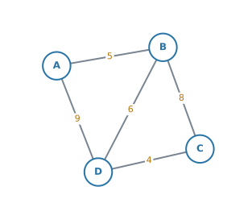
(a) Write down the degree of vertex \(D\).
(b) Find the total time for the route \(A \to B \to D \to C\).
(c) Find a quicker route from \(A\) to \(C\), and state its total time.
日本語訳
下の重み付きグラフは、\(4\) つの建物のあいだを歩く時間（分）を表しています。
(a) 頂点 \(D\) の次数を書きなさい。
(b) 経路 \(A \to B \to D \to C\) にかかる合計時間を求めなさい。
(c) \(A\) から \(C\) へのもっと速い経路を \(1\) つ見つけ、その合計時間を書きなさい。
(a) \(\deg(D) = 3\)
(b) \[ 5 + 6 + 4 = 15 \ \text{minutes} \]
(c) The route \(A \to D \to C\) takes \[ 9 + 4 = 13 \ \text{minutes} \]
(a) \(D\) から出ている edge は \(DA\)、\(DB\)、\(DC\) の \(3\) 本です。
(b) 通った edge の weight を足すだけです。\(AB = 5\)、\(BD = 6\)、\(DC = 4\) で \(15\) 分。
(c) 同じ場所を \(2\) 度通らない道は、\(4\) つあります。
| 経路 | 時間 |
|---|---|
| \(A \to B \to C\) | \(5 + 8 = 13\) |
| \(A \to D \to C\) | \(9 + 4 = 13\) |
| \(A \to B \to D \to C\) | \(5 + 6 + 4 = 15\) |
| \(A \to D \to B \to C\) | \(9 + 6 + 8 = 23\) |
\(13\) 分の道が \(2\) つあるので、どちらを書いても正解です。a quicker route は「(b) より速い道を \(1\) つ」という意味なので、\(1\) つ書けば足ります。
重みの大きい edge を通る道が、いつも遅いとはかぎりません。 \(AD\) は \(9\) と大きいのに、\(A \to D \to C\) は速いほうに入ります。必ず足して比べてください。